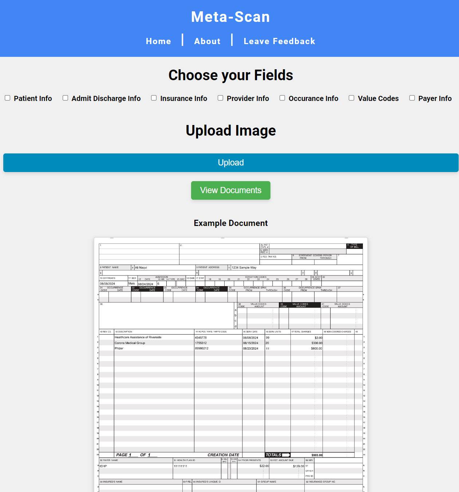
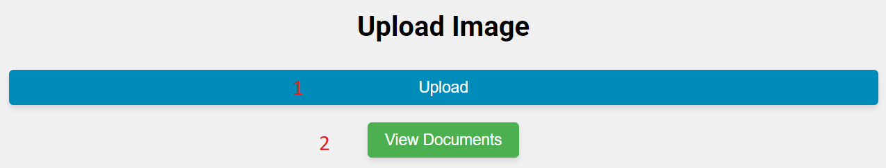

MetaScan is a powerful data extraction tool designed to streamline the process of extracting information from documents and converting it into structured formats like JSON and CSV.
By leveraging advanced OCR (Optical Character Recognition) technology, MetaScan accurately identifies and extracts text, tables, and other relevant data elements from various document types, including PDFs, images, and scanned documents.
Here is an example of a ub-04 form that you can process with our software
Key Features:
Accurate OCR
Flexible Data Formats
Customizable Extraction
Batch Processing
Integration Capabilities
Use Cases:
Document Digitization
Data Extraction
Data Migration
Research and Analysis
With MetaScan, you can:
Save time and effort
Improve accuracy
Enhance productivity
Unlock valuable insights
MetaScan is the ideal solution for businesses and individuals who need to efficiently extract data from documents and leverage it for various purposes.
How to use Metascan
Here is the Metascan home page.
This is your main dashboard where you can access all of MetaScan's state of the art features.

Lets take a deep dive into all that you can do with MetaScan software
Navigation Bar
Here you will various pages that can assist you:
1. Home
This page takes you to the home page where you can upload documents. This is the page that you start on.
2. About
Learn about Metascan and what it can do for you and your business. This page will also help you overcome confusion and learn to use all included features the software
3. Leave Feedback
You can leave suggestions for the developers here
Field Selection
Field selection allows you to pick which fields you would like to view, and also lets you exclude the ones you do not care to see
1. Patient Info
Information about the patient, such as name, date of birth, and gender.
2. Admit Discharge Info
Details related to the patient's admission and discharge from the facility.
3. Insurance Info
Information about the patient's insurance coverage, including the payer name and plan details.
4. Provider Info
Details about the healthcare providers involved in the patient's care.
5. Occurrence Info
Information about the specific events or procedures related to the patient's stay.
6. Value Codes
Codes representing the specific services or supplies provided to the patient.
7. Payer Info
Additional information about the insurance payer, such as their contact details.
File Upload

The file upload section allows you to upload images of UB-04 forms for processing. We currently only accept .jpeg file types
1. Upload Button
Pressing this button will bring up the your file system where they can then navigate to where their ub-04 jpeg scans are located
You are able to upload one or multiple documents at once for processing.
2. View Documents Button
Allows you to view a history of all previously uploaded and processed UB-04 forms.
You may also look through the extracted json data and modify any fields that may be incorrect.
More information on the view documents page and its functions are in the following section.
View Documents Page
Here you can view and edit a history of all the ub-04 forms that you have previously uploaded. There are some additional features at the bottom of the page.
1. Edit Field
If you click into any of the table entries, you will be able to edit the values contained.
You may add data to empty fields, edit existing fields, or delete existing fields.
2. Save Changes
Once you have looked through all the data and made neccessary changes and corrections, press the save changes button for your inputted data to be saved for later use.
If you do not press this button, all of your changes will be discarded upon exiting the page.
3. Upload Another Document
This page takes you back to the home page where you can upload additional documents. This is the page that you start on.
4. Download JSON
Allows you to download a copy of the json file containing all the information extracted from your ub-04 documents locally onto whatever device you are using.
need additional assistance?
MetaScan is the ideal solution for businesses and individuals who need to efficiently extract data from documents and leverage it for various purposes.